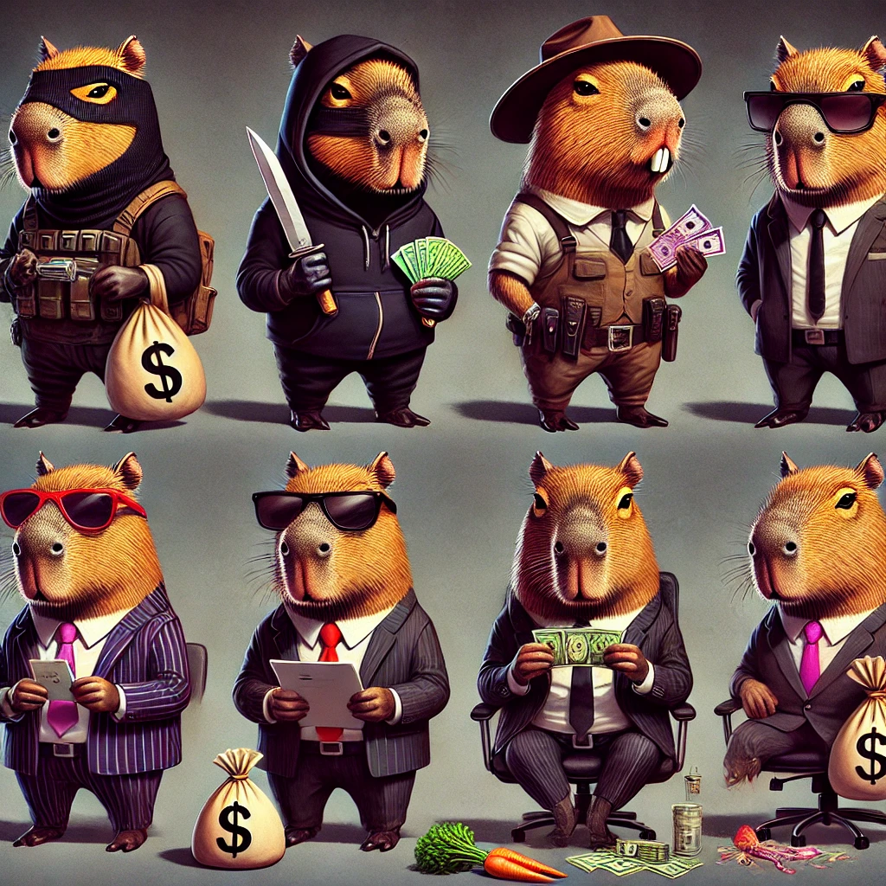

La Banda del Pantano: La Gran Traición
En el corazón del pantano, donde la niebla se mezclaba con el silencio de la noche, se encontraba la guarida secreta de La Banda del Pantano, un grupo de capibaras conocidos por su astucia y peligrosidad. Nadie en el bosque se atrevía a enfrentarlos, y su leyenda crecía con cada golpe maestro que ejecutaban. El líder de la banda era El Asesino, un capibara de mirada fría y corazón de piedra. Siempre llevaba una capa oscura que se movía con el viento, dándole un aire siniestro. Se decía que nadie había visto su sonrisa, y que su habilidad para desaparecer en las sombras era inigualable. Él planeaba cada golpe con precisión, y su autoridad era indiscutible. A su lado estaba El Ladrón, un capibara ágil y sigiloso. Llevaba siempre un antifaz negro que cubría sus ojos brillantes y una sonrisa juguetona que nunca abandonaba su rostro. Era el encargado de entrar y salir sin ser visto, y su habilidad para robar lo convirtió en leyenda. El Traficante manejaba el dinero y los contactos. Vestía gafas oscuras y un abrigo largo que ocultaba su mercancía. Nadie negociaba como él; podía vender hojas secas como si fueran oro puro. Conocía a todos en el bosque y mantenía a la policía de los búhos comprada con sus sobornos. Para mantener la ley a su favor, tenían a El Abogado, un capibara de mirada astuta y lengua afilada. Con sus gafas redondas y su maletín, siempre encontraba una manera de sacar a la banda de cualquier problema legal. Sabía manipular las palabras mejor que nadie y tenía contactos en la corte de los búhos. Y finalmente, estaba El Abusador, el músculo de la banda. Más grande y fuerte que los demás, imponía respeto y miedo. Nadie se atrevía a desafiarlo. Con su voz grave y su mirada penetrante, se encargaba de que las deudas se pagaran y de que las amenazas fueran tomadas en serio.
El Gran Golpe
Una noche, El Asesino reunió a toda la banda en la guarida. En el centro de la sala había un mapa del bosque, con una X roja marcando la ubicación del Gran Almacén de Zanahorias Doradas, un depósito fuertemente custodiado por los conejos guerreros del Rey Conejo. —Este será nuestro mayor golpe —dijo El Asesino, con voz firme—. Nos haremos con todas las zanahorias doradas y controlaremos el mercado del pantano. El Ladrón sonrió con malicia. —Yo puedo entrar sin ser visto. Conozco un pasadizo secreto que lleva directo a la bodega. El Traficante dio un paso adelante. —Yo me encargaré de mover la mercancía sin levantar sospechas. Nadie se enterará de quién lo hizo. El Abogado ajustó sus gafas. —Yo limpiaré nuestros nombres si las cosas se complican. Ya tengo una coartada perfecta. El Abusador se crujió los nudillos. —Y yo me encargaré de cualquier problema que aparezca. Nadie se interpondrá en nuestro camino. Todo estaba listo. El plan era perfecto. Pero El Asesino no confiaba en nadie, y en el fondo de su mente, ya planeaba traicionar a su propia banda y quedarse con todo el botín.

La Traición
La noche del golpe, todo salió como estaba planeado. El Ladrón desactivó las trampas y abrió las puertas sin hacer ruido. El Traficante organizó la distribución de las zanahorias en carretas cubiertas de hojas secas. El Abusador espantó a los guardias, y El Abogado falsificó documentos para cubrir sus huellas. Cuando terminaron, se reunieron en la guarida para repartir el botín. Pero El Asesino ya había preparado su jugada maestra. Había alertado a los búhos guardianes, acusando a sus propios compañeros de traición. De repente, la puerta de la guarida se abrió con un estruendo. Los Búhos Guardianes irrumpieron, rodeando a la banda. —¿¡Qué está pasando!? —gritó El Ladrón, mirando a su alrededor en busca de una salida. El Traficante intentó negociar, pero los búhos no le dieron oportunidad. El Abogado trató de defenderlos con palabras, pero sus argumentos cayeron en oídos sordos. El Abusador rugió y embistió, pero fue detenido por una red mágica. En medio del caos, El Asesino observaba desde las sombras, con una sonrisa siniestra en su rostro. —Todo esto fue tu culpa… —susurró El Ladrón, comprendiendo la traición demasiado tarde. El Asesino salió de las sombras, mirando a sus antiguos compañeros. —El poder es para el más fuerte… y ustedes ya no me sirven. Sin más que decir, El Asesino desapareció en la oscuridad, llevándose todo el botín y dejando a sus compañeros a merced de los búhos.

El Destino de la Banda
La noticia de la captura de La Banda del Pantano se esparció por todo el bosque. El Rey Conejo recuperó sus zanahorias doradas, y los búhos se llevaron a los capibaras traicionados a la prisión del Árbol Hueco. Pero El Asesino nunca fue encontrado. Algunos dicen que huyó a otro pantano para comenzar de nuevo. Otros susurran que se esconde en las sombras, esperando el momento adecuado para regresar. Y así terminó la leyenda de La Banda del Pantano, traicionada por su propio líder. Pero en el silencio de la noche, a veces se escucha un susurro en el viento... la risa fría de El Asesino, recordándoles a todos que en el mundo de los capibaras, la traición siempre acecha en las sombras.